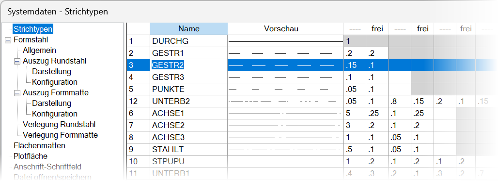
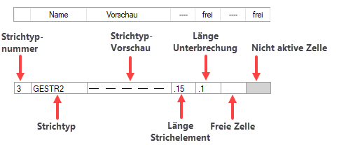
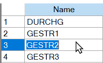

")

Konfiguration der Strichtypen. Insgesamt können 30 verschiedene Strichtypen definiert werden.
Die zur Verfügung stehenden Strichtypen können individuell konfiguriert, mit beliebigem Namen hinterlegt und sortiert werden. Die Sortierreihenfolge in der Tabelle wird für das Auswahlfeld für Strichtypen im Funktionsbereich übernommen.
 |
|---|
|
Hinweise: |
|
·Die Darstellung des ersten Strichtyps (DURCHG - Standardeinstellung) kann nicht geändert werden. ·Der in der zweiten Tabellenzeile aufgeführte Strichtyp wird automatisch für die Beton- und Stahlbetonschraffur verwendet. |

|
Tipps: |
|
·Benennen Sie die Strichtypen entsprechend der vorgesehenen Verwendung, z. B. "STB-SCH" für Stahlbeton-Schraffur. ·Verzichten Sie bei der Benennung der Strichtypen auf Umlaute und Sonderzeichen. Diese werden bei Weitergabe der Zeichnungsdaten über die DXF/DWG-Schnittstelle ggf. nicht richtig erkannt. |

Strichtyp definieren
In der Konfigurationstabelle geben Sie alle Längen in Zentimetern (cm) ein.
§Klicken Sie in eine Tabellenzelle, um einen Wert eintragen zu können.
§Geben Sie in den mit "" überschriebenen Spalten die Länge des Strichelements und in den mit frei überschriebenen Spalten die Länge der Unterbrechungen ein.
Punkte müssen als Strichelement mit 0.1 Zentimetern definiert werden.
§Bestätigen Sie mit der Eingabetaste. Die Vorschau des Strichtyps passt sich nach jeder Eingabe an.
Wenn Sie in eine "Freie Zelle" einen Wert eintragen, wird die nächste Zelle für eine Eingabe freigegeben. Zellen, die keinen Wert enthalten, werden bei der Wiederholung des Strichelements und der Unterbrechung nicht beachtet.
 In diesem Fall wird eine Länge von .15 cm gezeichnet, worauf eine Unterbrechung von .1 cm folgt. |
Bezeichnung des Strichtyps ändern
Um den Strichtyp-Namen zu ändern, klicken Sie mit einem Doppelklick den entsprechenden Strichtyp in der Spalte Name an. Der Text wird blau hinterlegt.
Tippen Sie den neuen Namen ein und bestätigen Sie mit der Eingabetaste. Der Strichtyp-Name muss aus mindestens einem Buchstaben oder Zeichen bestehen.
 |
Strichtypen sortieren
1.Markieren Sie den oder die gewünschten Einträge per Mausklick.
Einzeln markieren |
Strg + linke Maustaste |
Im Block markieren |
Klicken Sie die erste Tabellenzeile an, die markiert werden soll und anschließend, bei gedrückter Umschalt-Taste, die letzte Tabellenzeile. Alle Tabelleneinträge, die sich zwischen den angeklickten Einträgen befinden, werden markiert. |
2.Verwenden Sie die Sortierpfeile rechts vom Tabellenfeld:
|
Verschiebt die markierten Einträge ganz nach oben. |
|
Verschiebt die markierten Einträge eine Zeile nach oben. |
|
Verschiebt die markierten Einträge eine Zeile nach unten. |
|
Verschiebt die markierten Einträge ganz nach unten. |


Die Sortierreihenfolge in der Strichtypen-Tabelle wird im Strichtyp-Auswahlfeld entsprechend angepasst.
|
Zugehörige Referenz: